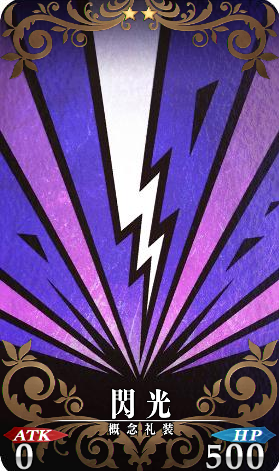

（ 256）非洲战神邓加尔
（256）非洲战神邓加尔
泽王完全是轻装上阵，他的武器只有一把单手剑，然后就是一件貌似提供不了什么防护的布衣，长长的头发被束成高马尾，他见邓加尔上场之后便拔剑出去，挽了个剑花，当真帅气无比，场外有不少士兵为之喝彩，但是阿萝看此人更不顺眼了——你这是比武的还是装逼的？
和轻装潇洒亲王殿下相比，邓加尔这边的装备就实在了不少，虽然考察团带的武器装备不多，但是用来武装一个人还是足够的，这次少年是把能搜罗到的最厚实的装备都套在了身上。
他上身穿着一件下摆能护住膝盖的短袖鳞甲，四肢都是从全身板甲上拆下来的散件，脑袋上扣的是个大桶盔，而更夸张的是，邓加尔手里还提着一面塔盾，武器则是一把长柄斧枪，背后还背着一面重盾以及一张突击弓和一壶箭，腰间还有一把硬头锤，完全就是一身重装步兵的行头……不！一般的重装步兵可能都没他穿的厚实，邓加尔现在就像一个移动的铁傀儡！
其实，少年是出于对东大陆诡异莫测的攻击手段的防备才把自己裹成这副德行的，他就不相信有了厚实鳞甲的防护，自己还会被那种可以无视肌肉防护直击五脏六腑的掌法给打趴下，之前那个叫雷震的东大陆使节团成员就给自己上了那么一课，后来自己不断变强之后以为自己不在害怕那种怪异的攻击手段了，哪想到在实验武器的时候又被西葫芦先生教育了一番。
‘之前我两次都没有穿铠甲！这次我穿了铠甲的，有了这么一层阻隔我就不信接不住。’
他这也是被东大陆的绵掌和渗透劲一类的功夫给打出心理阴影了，不穿厚实点都不敢上场。
这个时候，他的对手将剑斜指地面，做了个奇怪的礼仪，然后用认真的语气自我介绍道。
“龙骧帝国羽林卫剑士，江溟，请赐教。”
他没有提自己的贵族爵位，也没有说自己的高贵血统，只是简简单单的说了自己的武人身份。羽林卫并非军队而是纯以武力获得皇帝认可的习武者组成的特殊机构，他们将被赐予护卫龙骧宫禁的荣耀，虽然没有军职，但是地位却等同于禁军将军，而‘羽林’这个名字，则是由帝国建国时，一位研究降临者的大学者敬献的名字，意指‘为国羽翼，如林之盛，故曰羽林’。
龙骧帝国有万万之数的臣民，加上附庸藩属，这个数字会更为可怕，但是帝国强者数量最多的时候只选出了八百羽林卫，包括国内的高手和国外归化臣服的高手一共也就那么多人，可以说把自己的名字写进羽林卫名册是东大陆武人的最高成就，就算是不服正统的蛮夷勇士也渴望着有朝一日能够进入羽林卫或者战胜羽林卫的成员，龙骧帝国的武风甚至能感染敌人。
现在，邓加尔就被对方身上强烈的战斗意志给感染，他把盾牌往地上一杵，朝着江溟行了一个军礼，然后用龙骧语掷地有声道。
“柯林-维尔纽斯联邦，东部积雪大平原，维吉亚人后裔，猎人邓加尔。”
虽然凶猛善战的东部联邦人到底是不是古维吉亚部落的后裔这点，学者们还没做出定论，但这不妨碍邓加尔那这个来名头来给自己撑场面，哪怕他母亲是个东大陆人，他父亲干脆就是个来历不明的野人，但是从小就在林海雪原里生长的邓加尔从小就希望可以长得那些维吉亚战士一样高大魁梧……emmmmmmm~很显然他失败了。
“……猎人？你没有在正规的场所里面接受过武术训练吗？”
江溟困惑的问着，但是却摆出了一个咄咄逼人的起手式，邓加尔隔着老远就能感到寒意。
“没有，我从小接受的是狩猎的训练，是猎人之道……虽然我本人不是很想成为猎人。”
少年边回答边谨慎的架起盾牌，斧枪则在盾后摆出了预备反击的架势，盾牌恰到好处的挡住了江溟斩来的一剑，战斗就这样开始了。
场上的战局一开始就往诡异的方向一路发展，作为轻装剑士的江溟在抢攻压制，但他的抢攻动作并没有多块，只是靠着招式的连贯和战斗节奏的把握就让邓加尔只能被动的防御和招架。
而身穿重甲理应十分笨拙的少年此时却灵活的像只猴子，接连以前翻滚、后翻滚、侧翻滚、急速屈身下潜、大角度后仰、摇避等重装步兵很难做出的动作躲避江溟的剑锋，甚至还被逼的单手撑地后空翻，只有在完全没有回避机会的时候才举起塔盾抵挡一下。
邓加尔能这么玩，其实多亏了他现在已经超凡的身体素质，对现在的他来说，具装板甲的分量和不穿甲已经没有什么不同，就算有装甲阻碍，他也能凭借单纯的蛮力和身体强度来强行完成让人叹为观止的杂技式闪避，如果不是他从一开始就特别注意锻炼对力量的掌控力，恨不得把所有力量都纳入自己控制当中，恐怕现在还做不到这种程度，若不是他的肉体素质增强速度的总是比他锻炼控制力的速度快不少，少年此时还能表现的更加灵敏。
至于邓加尔为什么宁可消耗体力进行回避也不愿意招架的原因……战斗直觉提醒着邓加尔，如果被对方多次命中的话，可能会有糟糕的事情发生。
双方这样保持着诡异的战斗风格，你来我往的三四分钟，江溟突然开口了，语气有点困惑。
“你为什么老是闪避我的攻击？以你的身体强度，选择硬抗的话会更轻松吧？”
“……不能让你多次命中，虽然不清楚为什么会这样，但是直觉告诉我这里面有危险。”
邓加尔回答道，他的声音因为隔着一层头盔，所以听上去有点闷，而江溟闻言竟嘿嘿一笑。
“不错的战斗直觉，你是个优秀的战士，那么……恭喜你答对了！”
然后，邓加尔感觉一股寒意迎面扑来，巨大而不间断的冲击力把从巨盾上传递而来，以他此时的力量强度竟然也被打的东倒西歪站立不稳，不过还好他总能抓住那么一线机会重新站稳。
江溟正在以一种和先前截然不同的节奏进攻，非常狂乱但是却并非胡乱进攻，凌厉的剑势依然再由节奏稳定的控制着，他的每一剑都带着冰蓝色的雾气，但是这雾气里却还噼里啪啦的冒着紫色的电火花，在外人看来，邓加尔几乎被这样的连续的攻击打到双脚离地浮空了。
阿萝惊讶的瞪大了眼睛，这样的攻击方式她……呃~应该是他是在再熟悉不过，和那是来自一款经典割草游戏的经典技能——无双乱舞。
‘这个人是……穿越者？’
想到这里，少女没有见到同胞的欣喜，反而惊恐的头皮发麻，她在为邓加尔的安全而担心。
哐当！
厚实的塔盾根本经不起这样狂风骤雨一样的打击，很快就变成了碎片，邓加尔虽然及时用斧枪进行招架，但还是挨了三剑，看似厚实的胸甲一瞬变的破破烂烂，如果不是少年的反应速度够快，他被人可能已经被这一轮凶悍的攻击打成重伤。
而这时，江溟却没有攻击而是缓缓的做了一个收剑的动作，他对着狼狈的邓加尔赞赏道。
“可以在我的无双乱舞种以这种程度的损伤抽身成功，你比我之前遇到的敌人都强啊。”
少年深吸一口气，用意志力压住已经从伤口不断蔓延的寒气，直接了当的问道。
“……刚才那招是什么？”
“这是一门特殊的内功心法，名为无双。是我龙骧帝国开国太祖从一位避世的仙人处学来的秘传绝学，除了皇室和部分皇室旁支家族之外，也只有加入了羽林卫或者为帝国立下大功才有机会学习，至于效果嘛~大概就和你现在体会的差不多了。”
江溟很随意的说道，因为这件事情在龙骧王朝算不得秘密，龙骧帝国甚至将‘太祖被仙人点化’视作天命所归，虽然无双心法在强度上也只能算是东大陆一流传承中垫底的程度，但是这个绝学心法是开发式的，只要你成为羽林卫或者为龙骧帝国立下大功，就有机会学习，属于没人任何传承的东大陆草根武者人人都有机会学到的顶级武学。
无双心法的特性是面对的敌人越多，威力就越大，只要不断的持续战斗就能爆发出威力惊人的无双乱舞，而在使用者身受重伤的时候，还能爆发出威力空前的真·无双乱舞，属于可以把大量敌人如同割草一样打倒的对军级别攻击，哪怕龙骧帝国的羽林卫学的只是无双心法的基础部分，也可以做到一个人毫无压力的面对上千人的军队了。
‘……原来是一种心法吗？把系统的特性转化为这个世界的人也能学习的武学，做到这个的穿越者前辈，是一位天才啊。’
一听对方不是自己的同胞，座位上的少女长吁了一口气，然后擦了擦头上冒出的冷汗。
她刚才真的是吓坏了。
‘不过只要对方不开挂，我哥们就不会输，邓加尔是最强的！’
然而就算阿萝对少年的战斗力有着盲目的信心，邓加尔的情况依然朝着最糟糕的方向滑去。
这种限制了范围的决斗场，根本不适合他最擅长武器的发挥，而且最坑的是，邓加尔还没来得及找到机会亮弓，他背后的弓箭就已经被江溟抓住机会斩成了两截，他已经从自己的好友那里了解道路邓加尔箭术的可怕，怎么会给他使用弓箭的机会呢？
于是，战斗又进行了几分钟之后，邓加尔携带的第二面盾牌也被江溟以无双乱舞摧毁，手中的斧枪也被从中间切断，无双这种战技根本就是在作弊，只要你攻击频率足够高，足够连贯，那么你几分钟就能打出一次威力惊人的爆发攻击，而且几乎没有什么额外的消耗。
‘真是……太糟糕了！我决定了！一定要想办法学习东大陆的武学，回去向母亲大人请教！’
少年现在的心情大概就是那些被老拳师打趴下的老外，一脸懵逼的同时也对功夫产生了向往。
他深吸了一口气，抓住了半截斧枪的连接处，将之当成了短柄斧来使用，而少年的另外一只手则抽出了腰间别这硬头锤。
江溟谨慎的竖起了剑，他现在也感觉到了邓加尔的那种镇定来，就算已经被打的完全落入下风，随时都岌岌可危，这个人依旧没有慌张，甚至连心跳呼吸都保持着稳定的频率，虽然在外人看来，这场战斗中的节奏一直是被他所主宰的，但是江溟自己却很清楚。
在这场战斗中，邓加尔不管有多狼狈，都始终保持着自己的战斗节奏，完全没有受到来自江溟的干扰，这也是他感觉到些许不安的原因。
‘……这场战斗，我可能会输？’
不！不会的！现在我占尽了优势，格拉摩根伯爵已经没有可战之力了。
‘这场战斗脱的够久了！是时候结束它了！’
江溟已经不再考虑剁掉邓加尔的手指什么的，而是真正在心里萌生的杀意，因为双方的实力差距并不大，要是再去考虑那种小算盘的话，就只能落得失败的下场。
‘下一击无双乱舞，能活下来的话，就放过你好了。若是挡不住……你死了也是活该。’
因为这一击将是……觉醒无双！
江溟的剑上出现了一个特别的印记，阿萝眯起眼睛，她认出这是一个草体的‘苍’字，但是却不住地这个字出现意味着什么。
觉醒无双，就是将无双心法在战斗中快速积累的‘无双真气’，好吧！虽然龙骧的开国皇帝将这种力量称呼为‘真气’，但是任何一位修炼了无双心法的人都知道，这TM才不是真气。
总之，控制暴虐的‘无双真气’在全身游动，无双心法的修炼者就能进入名为‘觉醒’的状态，在这个状态下，无双乱舞将不再是短时间的爆发，而是直到因为体力与意志力量后继不足或是受到致死重伤从‘觉醒’状态掉出来之前，可是无限使用的普通攻击！
然而这边，邓加尔却平静的闭上了眼睛，将心神沉入到某个他两次深入过的地方，他不知道自己是如何和这个说不清道不明的‘境界’产生联系的，但是这并不妨碍邓加尔从其中获取力量，而这一次，那个‘境界’当中为少年而亮起的‘线’是两条。
‘一心一意。用心一，则无事不成。’
‘瞬间的看穿。紫电一闪，割裂天空。’
最后是……
‘不管你是什么样的战技绝学，统统都给我……崩坏吧！’
将你自豪的绝技彻底粉碎！